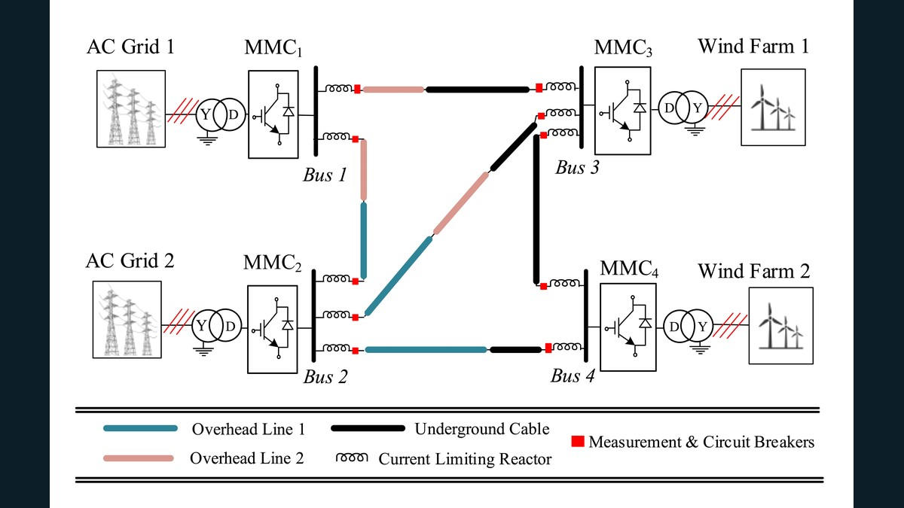
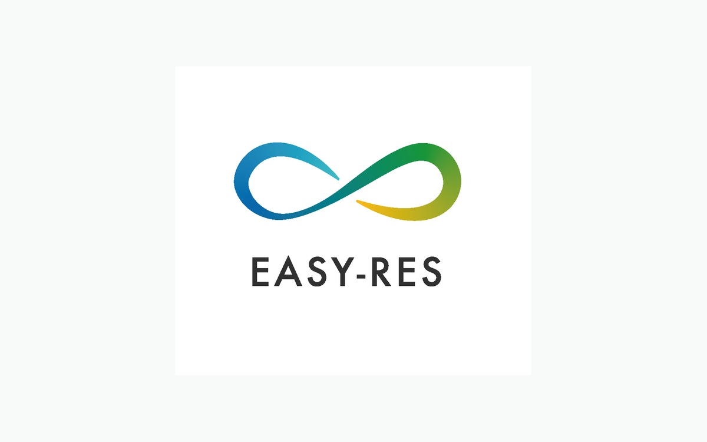

Current

InterOPERA
Unlocking multi-vendor, multi-terminal, multi-purpose HVDC grids with grid-forming capability for large-scale offshore wind integration.…
Open project →
Inter-oPEn
MSCA doctoral network integrating electrical engineering and legal research on PE-asset interoperability through openness.…
Open project →
MITIGATE-HARM
Fast, open-source tools to identify, assess and mitigate converter-driven instabilities and harmonic resonances in hybrid AC/DC and multi-vendor HVDC grids.…
Open project →
HARMONY
Open-source mathematical framework for harmonic stability assessment of PE-penetrated hybrid AC/DC systems — OPF, dynamic phasors and impedance methods in secon…
Open project →
PROSECCO
Maturing hybrid AC/DC grids through DC protection near converters and congestion management — with four European demonstrators.…
Open project →
SAFE-GRID
Standardised microsecond-scale adaptive MPC for PE converters in forthcoming multi-terminal HVDC grids.…
Open project →Completed

SUNRISE
Building research capacity in Serbia and the region for RES integration using real-time simulation (OPAL-RT, RTDS), MOOC training and hybrid AC/DC studies.…
Open project →
BiGER Explore
Open use-cases and state-of-the-art methods to bridge EMT and RMS for converter-driven stability in PE-rich grids.…
Open project →
EASY-RES
Making distributed RES grid-friendly providers of ancillary services — virtual inertia, frequency support, harmonics filtering and viable business models.…
Open project →